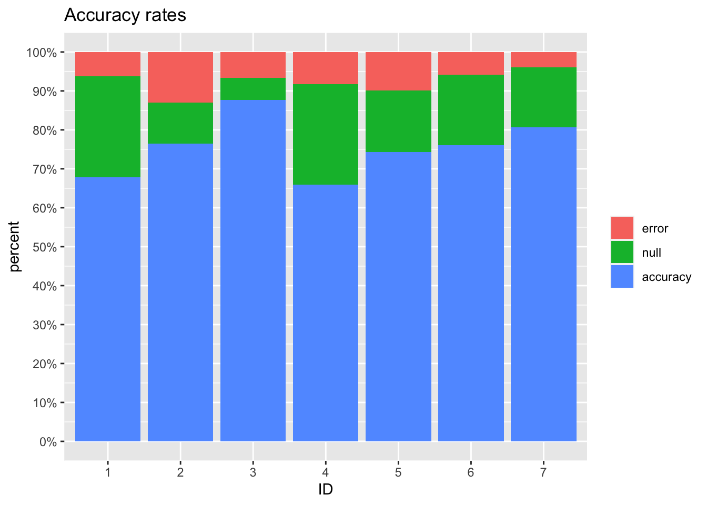
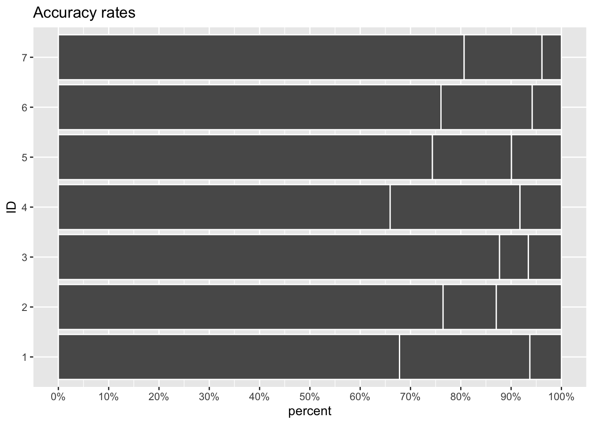
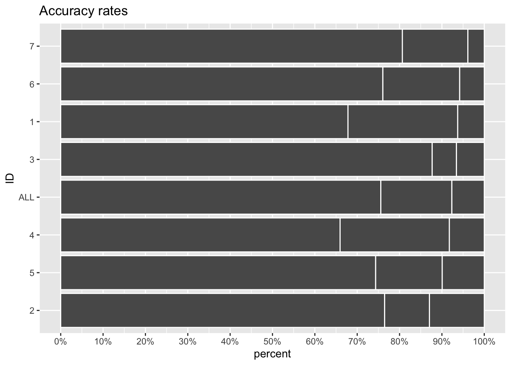
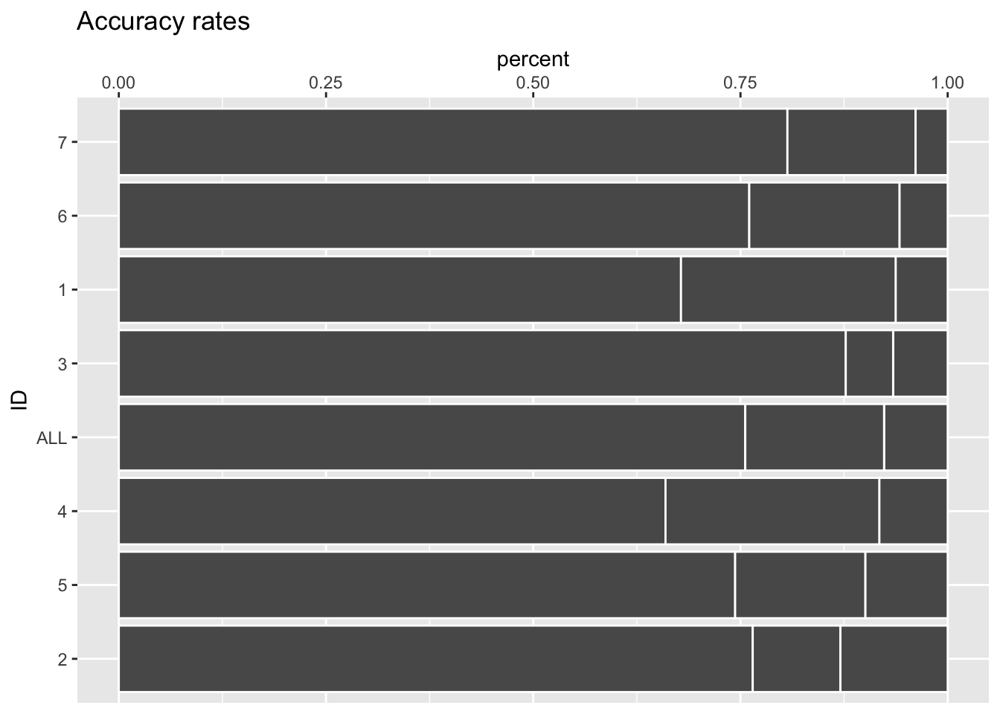
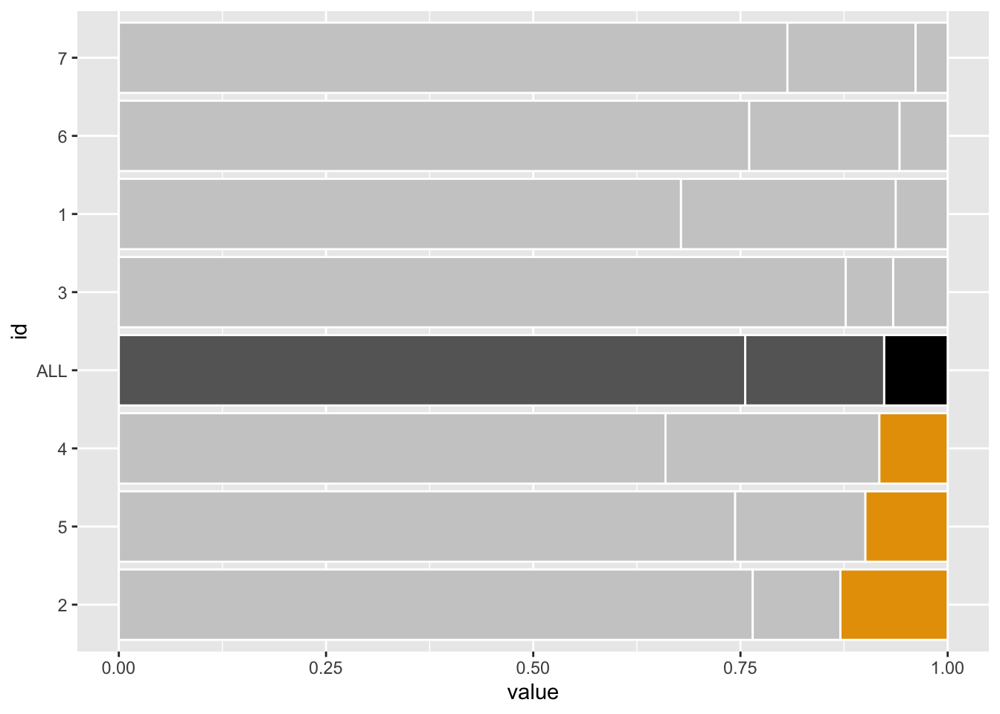
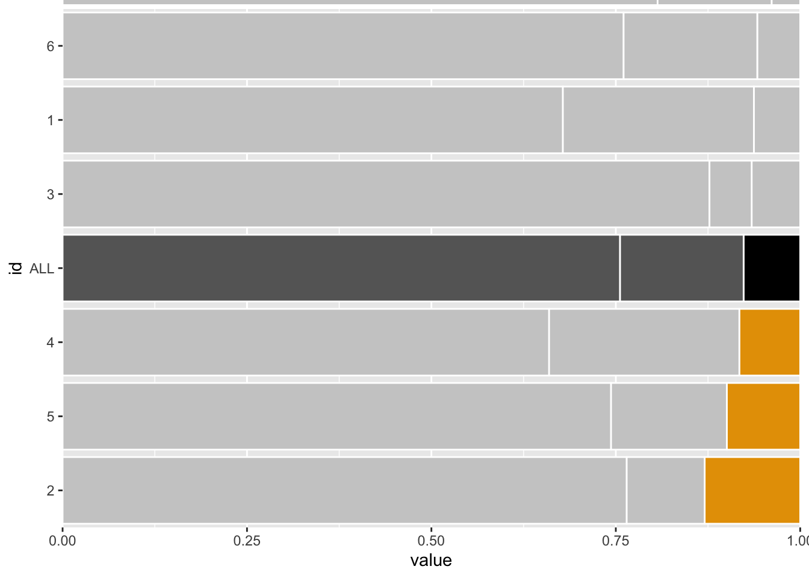

![]()
```{r}
#| warning: false
#| message: false
library(tidyverse)
set.seed(2)
mydata <- tibble(
id = as.character(1:7),
accuracy = rnorm(7, mean = 75, sd = 8),
error = rnorm(7, mean = 7, sd = 3),
null = 100 - accuracy - error
)
# não é garantido que null > 0... então vamos ajustar
mydata <-
mydata |>
mutate(accuracy = ifelse(null < 0, accuracy + null, accuracy),
null = ifelse(null < 0, 0, null)) |>
mutate(across(accuracy:null, ~./100))
mydata_pivot <-
mydata |>
pivot_longer(cols = accuracy:null,
names_to = "type",
values_to = "value")
```Como muito dos posts do meu blog, este não é original. De fato é uma cópia de publicações e vídeos de outros autores, e deixo aqui os links das fontes:
Eu faço esta cópia de conteúdo porque é uma forma minha de assimilar a informação e sempre que possível transformá-la um pouquinho colocando minha contribuição.
Dado os devidos créditos, vamos ao conteúdo.
Primeiro os dados
Eu comecei gerando meus próprios dados. Ao contrário dos links apresentados, eu queria ver como seria trabalhar com um número menor de registros. Por isto eu criei apenas 7 registros.
E o gráfico inicial:
```{r}
#| warning: false
#| message: false
mydata_pivot |>
ggplot(aes(
x = id,
y = value,
fill = factor(type, levels = c('error', 'null', 'accuracy'))
)) +
geom_col() +
labs(
titles = 'Accuracy rates',
x = 'ID',
y = 'percent',
fill = element_blank()
) +
scale_y_continuous(labels = ~ scales::percent(., accuracy = 1),
breaks = seq(0, 1, 0.1))
```
Base em cinza
Os dois primeiros passos são:
Inverter os eixos para manter os nomes na horizontal.
Construir uma base cinza para dar realce ao destaque que será criado.
```{r}
#| warning: false
#| message: false
mydata_pivot |>
ggplot(aes(
x = value,
y = id,
group = factor(type, levels = c('error', 'null', 'accuracy'))
)) +
geom_col(color = 'white') +
labs(
titles = 'Accuracy rates',
x = 'percent',
y = 'ID',
fill = element_blank()
) +
scale_x_continuous(labels = ~ scales::percent(., accuracy = 1),
breaks = seq(0, 1, 0.1))
```
Acrescentar um ponto de referência
Vamos utilizar a média dos valores como ponto de referência.
```{r}
#| warning: false
#| message: false
pivoted_data <-
mydata |>
pivot_longer(cols = accuracy:null,
names_to = "type",
values_to = "value")
medias <-
pivoted_data |>
group_by(type) |>
summarise(value = mean(value)) |>
mutate(id = 'ALL')
saved_mean_error = medias$value[medias$type == 'error']
mydata_com_media <- pivoted_data |> bind_rows(medias)
prep_data <-
mydata_com_media |>
pivot_wider(names_from = type,
values_from = value) |>
mutate(order_crit = error) |>
pivot_longer(cols = accuracy:null,
names_to = "type",
values_to = "value")
```Ordenar os dados
Temos que escolher qual informação seria relevante para nosso leitor.
Neste exemplo, o termo ‘accuracy’ para ser algo de valor. De outro lado, a variável ‘error’ também parece ser algo que precisa ser observado.
Vamos dar enfoque para a variável error, ordenado por ela.
```{r}
#| warning: false
#| message: false
prep_data <-
prep_data |>
mutate(type = factor(type, levels = c('error', 'null', 'accuracy'), ordered = TRUE),
id = fct_reorder(id, order_crit, .desc = T))
myplot <-
prep_data |>
ggplot(aes(
x = value,
y = id,
group = type
)) +
geom_col(aes(group = type),
color = 'white') +
labs(
titles = 'Accuracy rates',
x = 'percent',
y = 'ID',
fill = element_blank()
) +
scale_x_continuous(labels = ~ scales::percent(., accuracy = 1),
breaks = seq(0, 1, 0.1))
myplot
```
Coloque a escala x no topo
myplot +
scale_x_continuous(position = "top")Scale for x is already present.
Adding another scale for x, which will replace the existing scale.
Dê destaque à história que você quer contar
Queremos destacar os elementos com valores de ‘erro’ grande.
Por isto, vamos dar destaque para as linhas com estes valores em relação às demais.
# Escolhas as cores que vai utilizar
unhighlighted_color <- 'grey80'
highlighted_color <- '#E69F00'
avg_error <- 'black'
avg_rest <- 'grey40'
# Compute new column with colors of each bar
colored_data <-
prep_data |>
mutate(
custom_colors = case_when(
id == 'ALL' & type == 'error' ~ avg_error,
id == 'ALL' ~ avg_rest,
type == 'error' & value > saved_mean_error ~ highlighted_color,
T ~ unhighlighted_color
)
)
myplot <-
colored_data |>
ggplot(aes(x = value, y = id)) +
geom_col(
aes(group = type),
col = 'white',
fill = colored_data$custom_colors # Set colors manually
)
myplot
myplot <-
myplot +
coord_cartesian(
xlim = c(0, 1),
ylim = c(0.5, 7.5),
expand = F, # removes white spaces at edge of plot
clip = 'off' # allows drawing outside of panel
)
myplot
Citation
BibTeX citation:
@misc{abreu2023,
author = {Abreu, Marcos},
title = {Data Storytelling},
date = {2023-04-02},
url = {https://abreums.github.io/posts/2023-04-02-data-storytelling/},
langid = {pt-br}
}
For attribution, please cite this work as:
Abreu, Marcos. 2023. “Data Storytelling.” April 2, 2023. https://abreums.github.io/posts/2023-04-02-data-storytelling/.